节点概览
| 节点名称 | 软件名称 | 角色名称 | IP地址 | 安装包 |
|---|---|---|---|---|
| 管理器 | DMDFM | 管理器web程序 | 192.168.16.139 | dmdrs_rev166696_x86_rh6_64_20240808_dm2kafka.bin |
| 管理器 | DMDRS内置库 | 管理器元数据库 | 192.168.16.139 | dmdrs_rev166696_x86_rh6_64_20240808_dm2kafka.bin |
| 节点名称 | 软件名称 | 角色名称 | IP地址 | 安装包 |
|---|---|---|---|---|
| 源端 | DM8 | 生产者 | 192.168.16.138 | dm8*.iso |
| 源端 | DMDRS | 捕获噐 | 192.168.16.138 | dmdrs_rev166696_x86_rh6_64_20240808_dm2kafka.bin |
| 源端 | DMDRS代理 | 管理器代理 | 192.168.16.138 | dmdrs_rev166696_x86_rh6_64_20240808_dm2kafka.bin |
| 节点名称 | 软件名称 | 角色名称 | IP地址 | 安装包 |
|---|---|---|---|---|
| 目的端 | Kafka | 消费者 | 192.168.16.139 | kafka_2.13-3.8.0.tgz |
| 目的端 | DMDRS | 执行器 | 192.168.16.139 | dmdrs_rev166696_x86_rh6_64_20240808_dm2kafka.bin |
| 目的端 | DMDRS代理 | 管理器代理 | 192.168.16.139 | dmdrs_rev166696_x86_rh6_64_20240808_dm2kafka.bin |
准备工作
管理端
[root@db139 ~]# useradd dmdrs
[root@db139 ~]# echo "dmdrs:dameng123" | chpasswd
[root@db139 ~]# su - dmdrs源端
- 确认归档已开启
- 开启逻辑日志
call sp_set_para_value(1,'RLOG_APPEND_LOGIC',1);- 开启ddl捕获（可选）
call sp_set_para_value(1,'RLOG_APPEND_SYSTAB_LOGIC',1);- 创建测试表
create table tb_test as select 1 as id,'jjjjjjjjjjjj' as name union all select 2 ,'ccccccccccccccc';目的端
- 安装kafka（测试环境可调小内存）
[root@db139 ~]# tar zxvf kafka_2.13-3.8.0.tgz && cd kafka_2.13-3.8.0
[root@db139 ~]# sed -i 's/-Xmx[0-9]\+M/-Xmx128M/g' bin/zookeeper-server-start.sh
[root@db139 ~]# sed -i 's/-Xms[0-9]\+M/-Xms128M/g' bin/zookeeper-server-start.sh
[root@db139 ~]# sed -i 's/-Xmx[0-9]\+G/-Xmx512M/g' bin/kafka-server-start.sh
[root@db139 ~]# sed -i 's/-Xms[0-9]\+G/-Xms512M/g' bin/kafka-server-start.sh- 启动zookeeper（kafka依赖zookeeper，测试可使用kafka自带zookeeper）
[root@db139 ~]# bin/zookeeper-server-start.sh config/zookeeper.properties- 启动kafaka（新开窗口）
[root@db139 ~]# bin/kafka-server-start.sh config/server.properties- 创建测试主题（新开窗口）
[root@db139 ~]# bin/kafka-topics.sh --create --topic test --bootstrap-server localhost:9092 --partitions 1 --replication-factor 1- 启动测试生产者（可选，实际由源端DM8扮演）
[root@db139 ~]# bin/kafka-console-producer.sh --topic test --bootstrap-server localhost:9092- 启动测试消费者
[root@db139 ~]# bin/kafka-console-consumer.sh --topic test --from-beginning --bootstrap-server localhost:9092 开始安装
管理平台
安装管理平台
[dmdrs@db139 ~]$ ./dmdrs_rev166696_x86_rh6_64_20240808_dm2kafka.bin -iExtract install files..........
Please select the installer's language (E/e:English C/c:Chinese)[E/e]:c
-----------欢迎使用DMDRS 安装工具-----------
输入[exit]可退出安装。
-----------安装目录-----------
指定安装目录[/home/dmdrs/dmdrs5]:/home/dmdrs/dmdrs
-----------安装组件-----------
请选择需要安装的组件
1.安装达梦数据融合管理平台
2.安装代理
请选择安装组件数字序号(使用空格间隔):1
选择的组件有:
1.安装达梦数据融合管理平台
"确认?[Y/y(确认选择) or N/n(重新选择)]:y
-----------许可证文件-----------
1.免费试用达梦数据复制软件(必须在试用期范围内使用，反复安装无效，使用时间为3个月)
2.使用许可证文件
指定许可证文件(1,2)[1]:
免费试用许可证文件限制信息如下：
有效日期:2024-11-07
授权顾客名称：DEVELOP USER
项目名称:
许可证编号:dm66n367
版本类型:试用版
授权数据库类型:DM6,DM7,DM8,Oracle,SQL Server,MySQL,DB2,PostgreSQL,Kafka
当前默认许可证文件支持数据库类型为[DM6,DM7,DM8,Oracle,SQL Server,MySQL,DB2,PostgreSQL,Kafka]，是否继续安装?[Y/y or N/n]:y
-----------配置-----------
依赖环境配置 -数据库动态库路径[/opt/dmdbms/bin]:
达梦数据融合管理平台配置-管理平台端口[8080]:
是否使用外置库(0:不使用 1:使用 )[0]:
-----------安装小结-----------
安装目录:[/home/dmdrs/dmdrs]
依赖环境配置-NEED_LIB_PATH:[/opt/dmdbms/bin]
达梦数据融合管理平台IP:[127.0.0.1]
达梦数据融合管理平台端口:[8080]
内置库信息：
数据库IP:[127.0.0.1]
数据库端口:[15236]
用户名:[SYSDBA]
密码:[******]
所需磁盘空间/可用磁盘空间:[1,792 MB/26,441 MB]
确认安装?[Y/y or N/n]:y
-----------安装中-----------
server start ... server finished.
default start ... default finished.
web start ... web finished.
doc start ... doc finished.
db start ... db finished.
安装成功
-----------系统服务-----------
内置数据库服务设置
1.注册系统服务
2.不注册系统服务
启动方式(1,2)[2]:1
正在创建内置数据库服务....
达梦数据融合管理平台服务设置
1.注册系统服务
2.不注册系统服务
启动方式(1,2)[2]:1
正在创建达梦数据融合管理平台服务....
以下配置脚本需要以"root"用户的身份运行.
/home/dmdrs/dmdrs/scripts/root/root_installer.sh
是否已执行shell脚本?(Y/y or N/n)[Y/y]:y
-----------安装总结-----------
达梦数据复制软件V5安装完成
地址:http://127.0.0.1:8080
用户名/密码:admin/admin
更多安装信息，请查看安装日志文件：/home/dmdrs/dmdrs/log/install.log注册管理平台服务
# 切换到root账号
[root@db139 ~]# /home/dmdrs/dmdrs5/scripts/root/root_installer.sh创建DmServiceDFDB服务
Created symlink from /etc/systemd/system/multi-user.target.wants/DmServiceDFDB.service to /usr/lib/systemd/system/DmServiceDFDB.service.
创建服务(DmServiceDFDB)完成
创建DfmWebService服务
Created symlink from /etc/systemd/system/multi-user.target.wants/DfmWebService.service to /usr/lib/systemd/system/DfmWebService.service.
创建服务(DfmWebService)完成
启动DmServiceDFDB服务
启动DfmWebService服务调整管理平台内存（仅较低配置测试环境）
[root@db139 ]# sed -i 's/-Xms[0-9]\+m/-Xms256M/g' /home/dmdrs/dmdrs/web/DfmWebService
[root@db139 ]# sed -i 's/-Xmx[0-9]\+m/-Xmx256M/g' /home/dmdrs/dmdrs/web/DfmWebService
[root@db139 ]# /home/dmdrs/dmdrs/web/DfmWebService restart确认管理平台服务已启动
[dmdrs@db139 ~]$ ss -lntp | egrep "8080|15236"LISTEN 0 128 [::]:15236 [::]:* users:(("dmserver",pid=6339,fd=4))
LISTEN 0 100 [::]:8080 [::]:* users:(("java",pid=6531,fd=42))登录管理平台
浏览器打开以下管理器地址：http://192.168.16.139:8080/
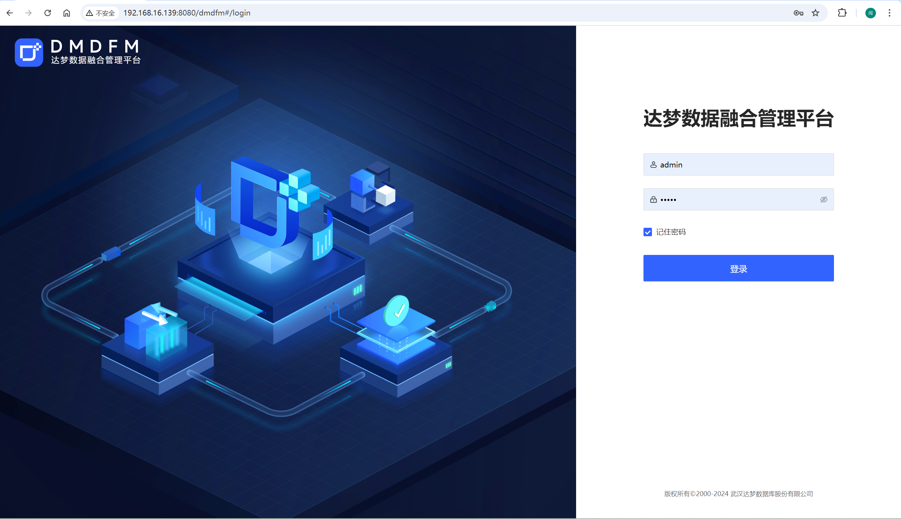
安装代理
注：因为实际生产环境中，很可能管理端、源端、目的端三种同步角色并不在同一个服务器上，为了让管理端在web界面上就能直接启停源端和目的端的服务，就需要在源端和目的端上安装代理监听服务。
1、登录后直接点击
安装代理2、如不小心点击
取消，可在运维->代理管理中再次进行安装
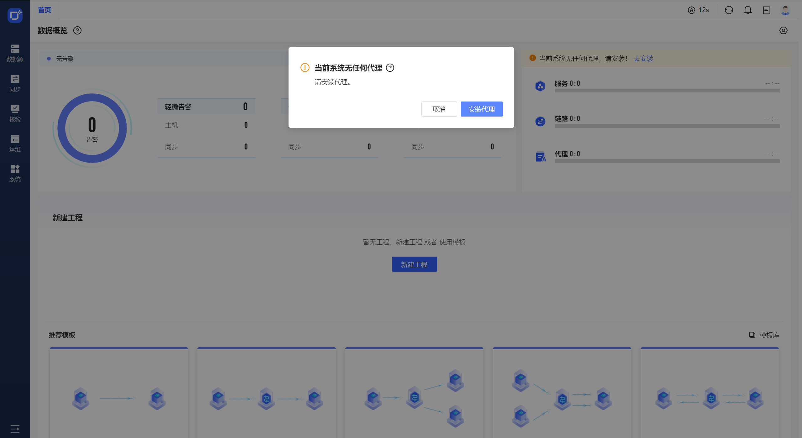
填写代理安装信息
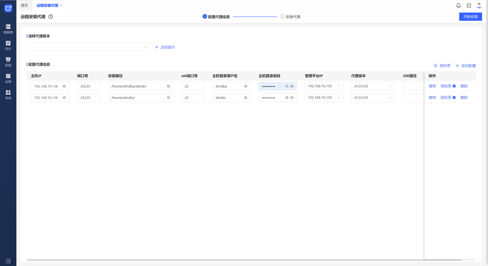
调整代理内存
由于测试环境硬件配置较低，可考虑调整源端和目标端的内存为128M，正式环境内存充足可忽略该步骤
[root@db138 ]# sed -i 's/-Xms[0-9]\+[mMgG]/-Xms128m/g' ~dmdba/dmdrs/agent/{startup-agent.sh,DfmAgentService}
[root@db138 ]# sed -i 's/-Xmx[0-9]\+[mMgG]/-Xmx128m/g' ~dmdba/dmdrs/agent/{startup-agent.sh,DfmAgentService}
[root@db139 ]# sed -i 's/-Xms[0-9]\+[mMgG]/-Xms128m/g' /home/dmdrs/agent/{startup-agent.sh,DfmAgentService}
[root@db139 ]# sed -i 's/-Xmx[0-9]\+[mMgG]/-Xmx128m/g' /home/dmdrs/agent/{startup-agent.sh,DfmAgentService}安装DRS同步软件
1、该测试环境中，由于管理端和目的端是同一个服务器，所以以下只安装源端的DRS软件即可。如果生产环境中源端和目的端不在管理端服务器（管理端服务安装后，实际已包含DMDRS软件）上，则需要在源端和目的端安装DMDRS同步软件。
2、菜单路径：运维->服务管理->DMDRS安装目录->安装DMDRS
3、DMDRS安装路径告警目录不为空，需点击忽略才能进行下一步（因该目录下有一个代理子目录，不影响）
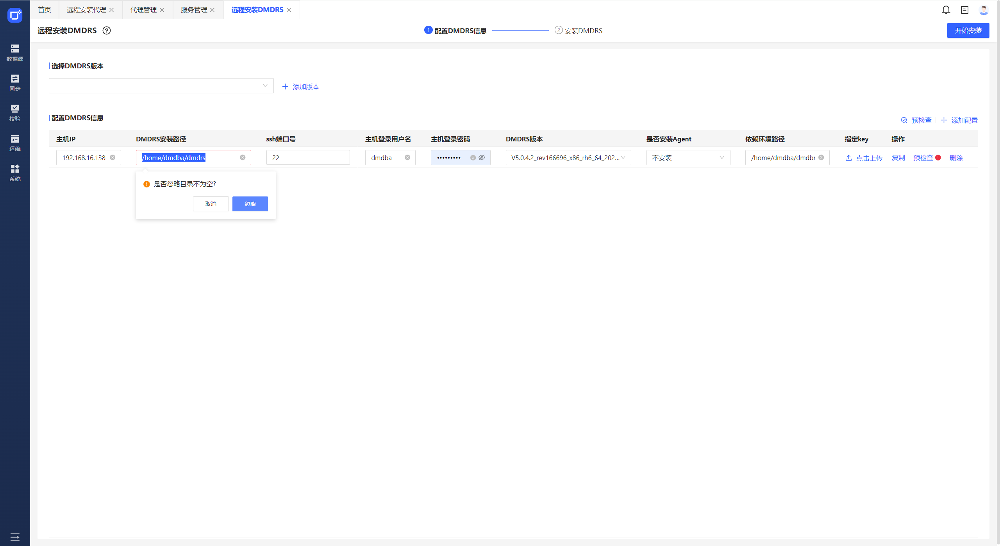
新建数据源
新建数据源DM8
菜单路径：
数据源->数据源管理->数据库->新增数据源
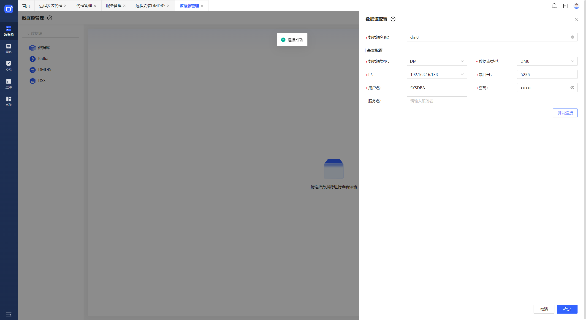
新建数据源kafka
菜单路径：
数据源->数据源管理->Kafka->新增数据源
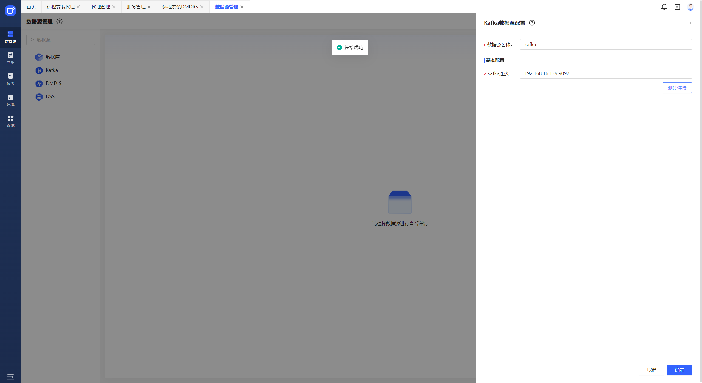
新建同步工程
菜单路径：
同步->同步工程概览->新建工程
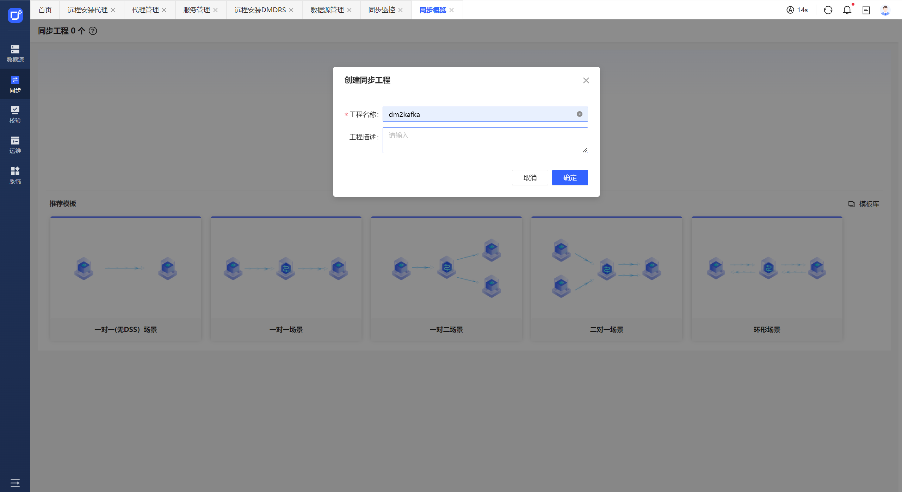
新建拓扑
从左侧数据源菜单中将此前新建的dm8和kafaka拖动到画板上
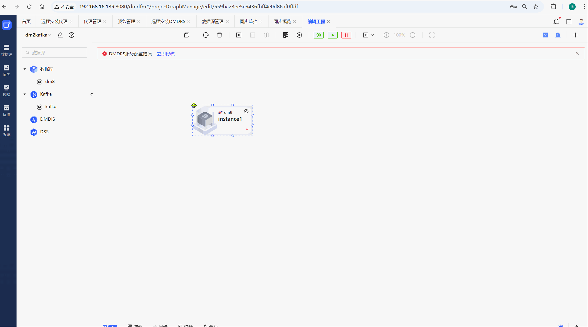
修改两端同步实例
分别双击源端和目的端组件进行修改
修改源端dm8同步实例配置
注：如DMDR_HOME的目录为自动识别，请手动配置DMDRS的bin路径
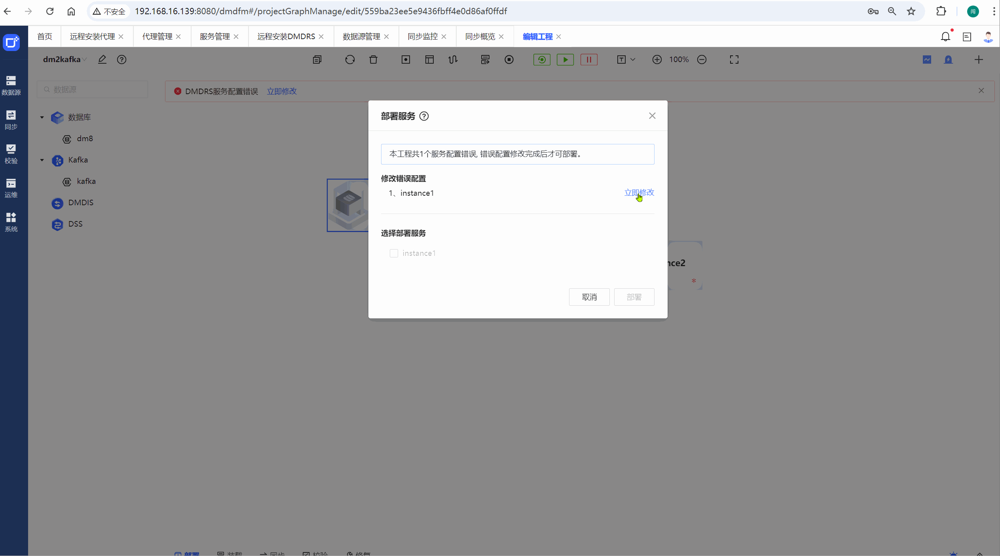
部署修改后的源端同步实例组件dm8
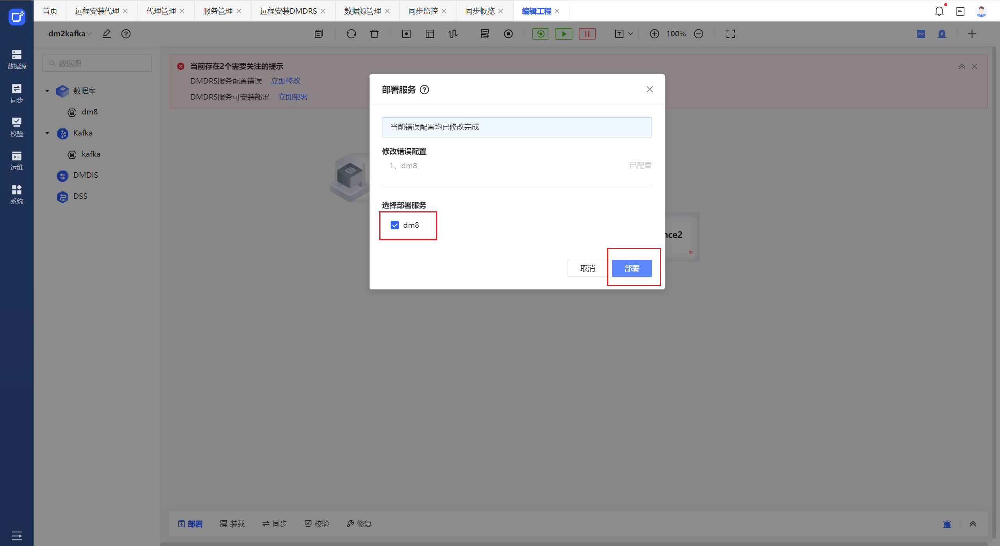
修改目的端组件kafaka配置
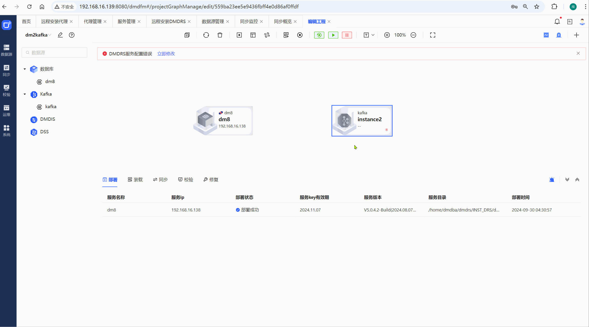
部署目的端组件kafaka
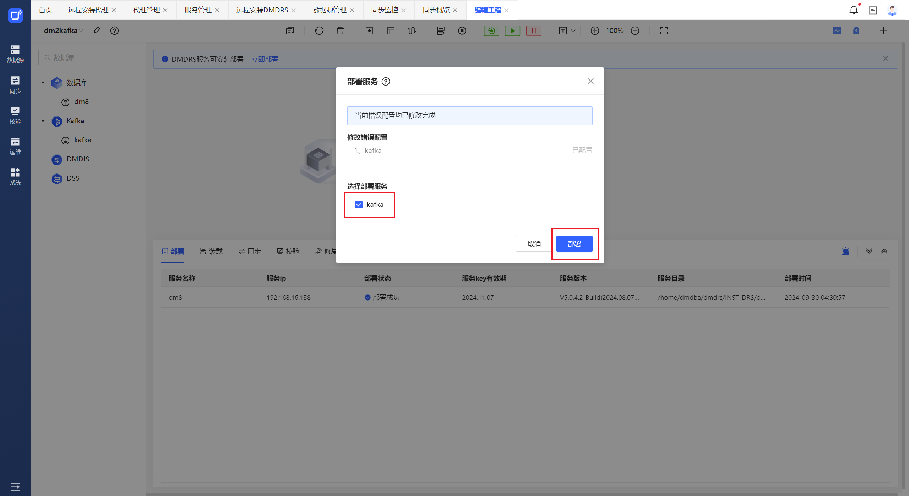
设置目的端环境变量
1、如果源端和目的端不在同一个服务器上，那么以下目的端的DM_HOME变量不用设置
2、目的端的用户环境变量配置是指【安装DRS同步软件】步骤时指定的操作系统账号。本例中目的端使用的是dmdrs用户，所以下面修改的是dmdrs的用户环境变量
3、下方的DMDRS_HOME路径是目的端实际的DMDRS软件安装目录
cat >> ~dmdrs/.bash_profile <<- \EOF
# DM_HOME变量指达梦数据库软件路径，如未安装DM数据库软件，则请删除第3行的DM_HOME变量设置
DM_HOME=/home/dmdba/dmdbms/bin
export DMDRS_HOME=/home/dmdrs/dmdrs/
export PATH=$PATH:$DM_HOME/bin:$DMDRS_HOME/bin
export LD_LIBRARY_PATH=$LD_LIBRARY_PATH:$DM_HOME/bin:$DMDRS_HOME/bin/kafka_lib:$DMDRS_HOME/bin
EOF链接两端组件，选择同步的表
注：需要将鼠标移动到源端组件上出现“设置”样式的六边形图标时才能实现拖动创建链接
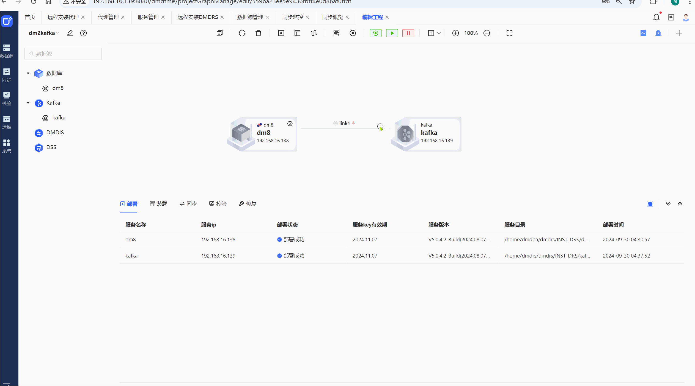
完善kafka同步规则配置
注：内存足够时，可忽略以下动画视频中的内存和线程调整项
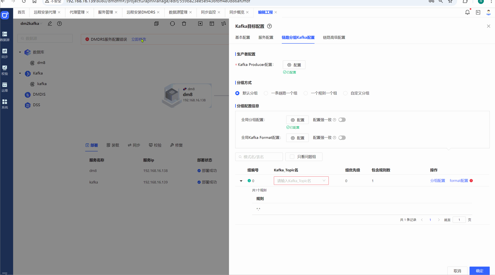
调小目的端mem_size（测试环境配置降低时）
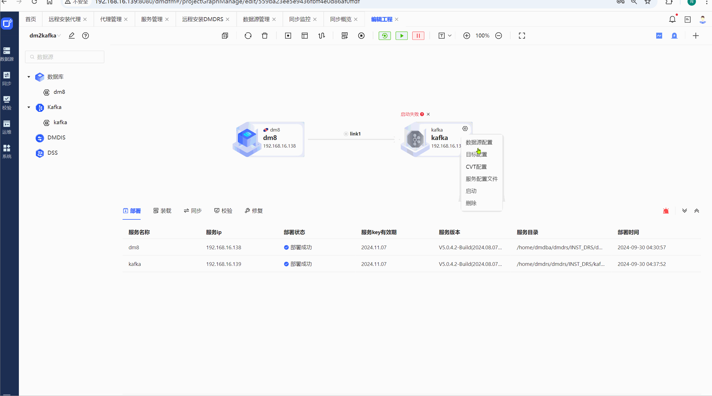
启动链接并装载
注：启动方式可点击快捷图标栏的三角形按钮或连接线上的六边形图标
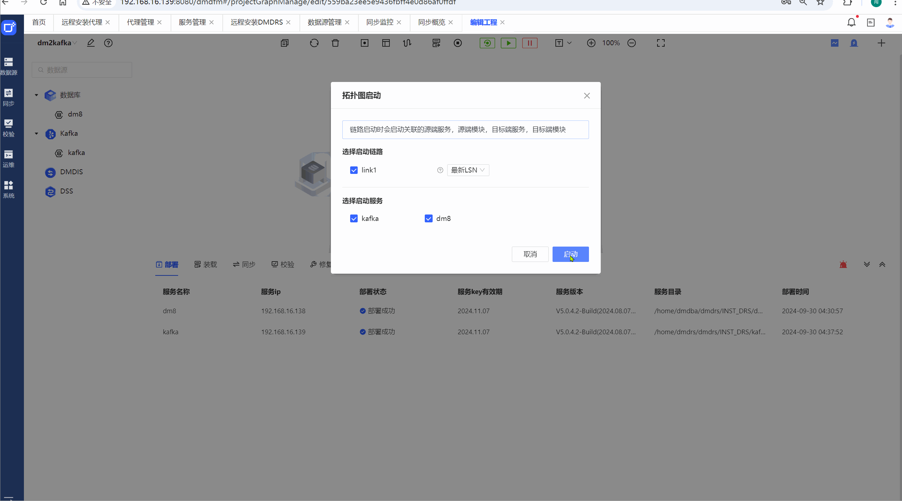